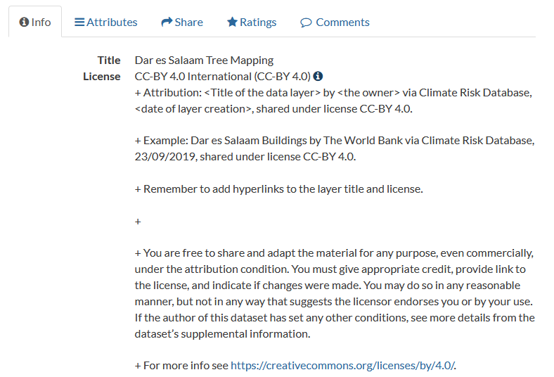

Data users¶
Would you like to use our geospatial datasets? They are freely available for the whole disaster risk management community that might need them in planning, research, education, or other activities. Please read this section to get more information about downloading data and using them under the determined license terms.
Using data¶
Downloading¶
You may download individual layers through the Climate Risk Database by following steps below. Visual instructions can be downloaded from here: Instruction: Downloading data from CRD.
Navigate to the layer page of the desired layer.
Click Download Layer from the right-hand side menu.
Go to Data tab.
Download the layer in the format of you choosing. Vector layers are suggested to download as Zipped shapefile or Original dataset. Also, some tabular formats are usually available, such as Excel and CSV. Raster layers are suggested to download as GZIP, GeoTIFF or Original dataset.
Note: If the file size is very big, the option Original dataset redirects you to a Seafile folder from where you can download the data in the given format.
If you downloaded the data in zipped format (Zipped shapefile or GZIP), extract the files to a desired folder by right clicking the zipped folder and choosing Extract all… (or similar).
WFS/WMS¶
An easy way to access all layers in the Climate Risk Database is via GIS software, such as QGIS. Layers can be accessed by using Web Feature Service or Web Map Service. Download visual instructions here: Instruction: Open layers in QGIS via WFS/WMS.
Terms¶
Always remember to comply with the license the data is shared under. Each layer has a license that determines how it can be used. Most of the layers in CRD have an open license which allows any kind of use of the data, but requires the user to attribute the data owner and the Climate Risk Database. Check the license and how the attribution should be done from the dataset’s metadata. Clicking the info-symbol reveals more information about the license and an attribution example.
Inspiration¶
The Thematic Maps section provides some examples of analysis and visualisation for geospatial datasets downloadable via the Climate Risk Database. These might serve as an inspiration of how to utilize the available data in planning, research, education and information dissemination.
Other databases and map services¶
Here we have gathered links to other interesting geospatial databases that touch the themes of environment, climate change and disaster risk management. We cannot ensure the quality of the datasets derived from these sources. If you know other databases that could be added to this list, please let us know!
WaPOR - The FAO portal to monitor water productivity through open access of remotely sensed derived data. This database collects open-source derived data in continental, national and sub-national levels from different data providers. Themes cover e.g. precipitation, evapotranspiration and biomass productivity. Downloading requires registration, map-viewing is open for visitors.
Protected planet - Protected Planet is the most up to date and complete source of data on protected areas and other effective area-based conservation measures (OECMs), updated monthly with submissions from governments, non-governmental organizations, landowners and communities. Data downloading is possible for all.
IUCN Red list - The world’s most comprehensive information source on the global conservation status of animal, fungi and plant species. IUCN Red list website provides information of endangered species, reports, news, statistics and a map function that can be used to download spatial data about almost any species. Downloading is open for all.
Infrapedia - Infrapedia is the most complete and versatile interactive infrastructure map of the Internet that gathers information of Internet cables and network locations. Data downloading is not possible from the site itself, but Infrapedia can connect users with data provider parties by request.
Landportal - Geodata portal mainly about indigenous communities’ lands and resources. Landportal gathers openly available datasets from different data providers, and thus all data is downloadable by all.
Landscape Portal - The Landscape Portal is World Agroforestry’s interactive online spatial data storage and visualization platform for landscape data from all over Africa. It comes with a rich set of features to store, document, search and retrieve, and visualize spatial data and maps. Data quality varies significantly between different datasets. All data is downloadable for visitors.